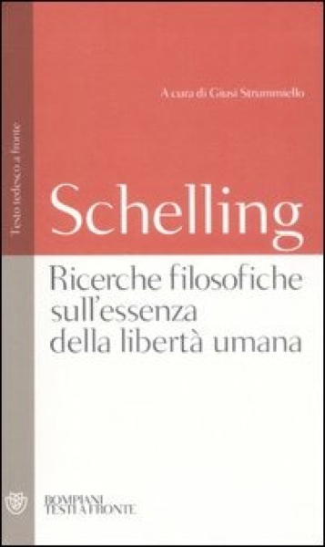
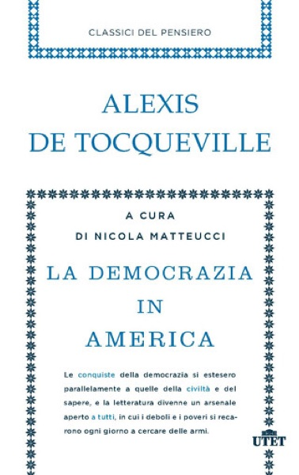

1:12:41 · 6 OPERE
Saggio sulla libertà di John Stuart Mill.
Il filo del discorso
Perché tornare a un saggio ottocentesco sulla libertà? Il contributo legge On Liberty come uno strumento per interrogare il conflitto tra autonomia personale e organizzazione sociale. Dopo una ricostruzione dell’Ottocento e della formazione di Mill, il discorso distingue la sua difesa della scelta individuale dalla ricerca di una felicità garantita dall’esterno. Passa poi alla standardizzazione dei comportamenti, al potere delle istituzioni e alla pressione delle maggioranze. La parte finale commenta direttamente alcune pagine del saggio: porre limiti al potere, tutelare il dissenso e mantenere aperto il confronto tra opinioni. I richiami alla pandemia appartengono alla lettura polemica proposta dall’autore. Il filo conduttore resta la possibilità di costruire un giudizio autonomo senza rinunciare alla vita comune.
I libri nel discorso

Saggio sulla libertà
Copertina: Il Saggiatore
Opera presentata con il titolo originale On Liberty e autore nell’apertura; le pagine vengono commentate nel seguito. Edizione non determinata.
Passaggio 0:08 ↗ · Fonti e libro ↗
L’origine delle specie
Copertina: Bollati Boringhieri · I grandi pensatori
Titolo e autore espliciti nel confronto tra due pubblicazioni del 1859.
Passaggio 0:25 ↗ · Fonti e libro ↗
Il capitale
Copertina: Editori Riuniti · Libro primo
Marx è nominato nel contesto; viene indicato esplicitamente il primo libro del Capitale, capitolo 22.
Passaggio 17:18 ↗ · Fonti e libro ↗
La macchina del tempo
Copertina: Feltrinelli · Universale Economica, I classici
Titolo esplicito; il nome dell’autore è deformato dal riconoscimento. Il successivo riferimento agli Eloi e ai Morlock coincide con la descrizione dell’editore, senza determinare l’edizione.
Passaggio 28:53 ↗ · Fonti e libro ↗
Ricerche filosofiche sull’essenza della libertà umana
Copertina: Bompiani, 2007 · testo tedesco a fronte
Schelling e il titolo sono riconoscibili nel confronto con Mill; essenza è deformata in assenza nei sottotitoli. Titolo normalizzato sulla fonte dell’editore; ascolto ancora necessario.
Passaggio 44:39 ↗ · Fonti e libro ↗
La democrazia in America
Copertina: UTET · Classici del pensiero
Autore e titolo espliciti durante la digressione sulla teoria economica di Mill.
Passaggio 46:24 ↗ · Fonti e libro ↗